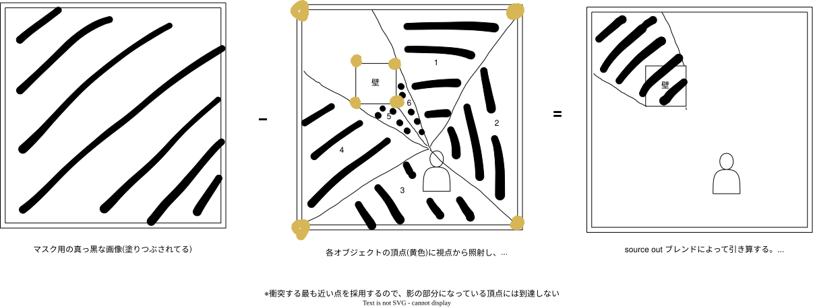

KDOC 160: 見下ろし型2Dゲームにおけるレイキャティングの例
この文書のステータス
- 作成
- 2024-05-04 貴島
- レビュー
- 2024-05-09 貴島
例
レイキャスティングは、視点から光線(レイ)を放射して(キャストして)、一番手前の物体までの距離を測定する手法である。
2Dゲームの影描画したいときの例を示す。

Figure 1: 影描画の流れ
- 画像を引き算するブレンド法は、
source outという
ソースコードのサンプルは、Ray Casting - Ebitengineにある。
関連
- KDOC 59: ECSを使ってサンプルゲームを作る。ゲーム作成で使った